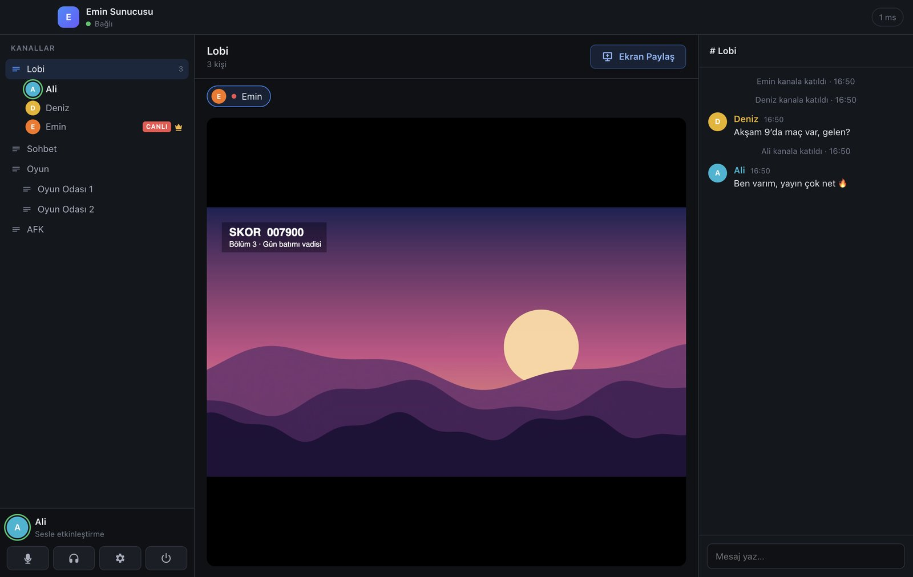

Arkadaşlarınla konuş, ekranını paylaş.
Kanki; kanal kanal sesli sohbet, yazılı mesaj ve 4K 60 FPS'e kadar ekran paylaşımı sunan, sadece bizim ekip için yapılmış bir uygulama.

İhtiyacımız olan her şey, fazlası değil.
Reklam yok, hesap açmak yok, abonelik yok. Uygulamayı kur, adresi yaz, konuşmaya başla.
Net ekran paylaşımı
Tüm ekran ya da tek pencere. 4K'ya kadar çözünürlük, 60 FPS ve oyun sesiyle birlikte.
Kanal kanal sohbet
Lobi, oyun odaları, AFK. Gürültü bastırma ve oyun içinde de çalışan bas-konuş tuşu.
Düşük gecikme
Ses ve görüntü bir sunucuya uğramadan doğrudan arkadaşlarına gider.
Bize özel
Sunucuyu biz kuruyoruz, kimse dinlemiyor. İstersek şifreyle kilitliyoruz.
Bilgisayarına uygun sürümü seç
Windows için kurulumlu sürümü öneriyoruz: bir kere kurarsın, yeni sürümler çıktıkça kendiliğinden güncellenir.
Adım adım kurulum
Uygulama imzalı değil (imza sertifikası ücretli). Bu yüzden ilk açılışta Windows ya da macOS bir uyarı gösterir. Aşağıdaki adımlarla bir kere geçmen yeterli.
-
Kanki-Setup.exe dosyasını indir
Yukarıdaki Windows için indir düğmesine bas ve inen dosyaya çift tıkla.
Tarayıcı indirmeyi engellerse indirmeler listesinde dosyanın yanındaki ⋯ menüsünden Sakla / Koru seçeneğini seç. -
"Windows bilgisayarınızı korudu" uyarısını geç
Mavi bir SmartScreen penceresi çıkarsa önce Ek bilgi yazısına, ardından Yine de çalıştır düğmesine tıkla. Bu uyarı sadece ilk kurulumda çıkar.
-
Kurulumu tamamla
Kurulum yerini istersen değiştir, Yükle ve ardından Son. Kanki masaüstüne ve Başlat menüsüne eklenir, yönetici izni istemez.
-
İzinleri ver
İlk açılışta Windows Güvenlik Duvarı izin isterse Özel ağlar kutusu işaretliyken Erişime izin ver de. Mikrofon izni sorulursa onayla.
-
Mac'ine uygun .dmg dosyasını indir
M1–M4 işlemcili Mac'ler için Kanki-mac-arm64.dmg, Intel Mac'ler için Kanki-mac-x64.dmg.
-
Uygulamalar klasörüne sürükle
.dmg dosyasını aç, açılan pencerede Kanki simgesini Applications (Uygulamalar) klasörüne sürükle.
-
İlk kez aç
Uygulamalar klasöründe Kanki'ye sağ tıkla → Aç → çıkan uyarıda tekrar Aç.
macOS 15 (Sequoia) ve sonrasında "Aç" seçeneği çıkmazsa: Sistem Ayarları → Gizlilik ve Güvenlik sayfasının altındaki Yine de Aç düğmesine bas. -
"Kanki hasarlı" uyarısı çıkarsa
Uygulama bozuk değil; macOS internetten inen imzasız uygulamaları böyle işaretliyor. Terminal'i aç (Spotlight'ta "Terminal" yaz), şu komutu yapıştırıp Enter'a bas, sonra Kanki'yi tekrar aç:
xattr -cr /Applications/Kanki.app -
İzinleri ver
Mikrofon: İlk bağlantıda sorulur, İzin Ver de.
Ekran Kaydı (ekran paylaşacaksan): Sistem Ayarları → Gizlilik ve Güvenlik → Ekran ve Sistem Sesi Kaydı bölümünde Kanki'yi aç. Ardından Kanki'yi tamamen kapatıp (⌘ Q) yeniden başlat.
Erişilebilirlik (isteğe bağlı): Bas-konuş tuşunun oyun içindeyken de çalışması için gerekir; Kanki ayarlarından tuş atarken istenir.
Bağlan, konuş, paylaş
Sunucu adresini ve varsa şifreyi Emin'den alacaksın. Adres şuna benzer: bizim-kanki.ngrok-free.app
Sunucuya bağlan
- Takma ad alanına arkadaşlarının seni tanıyacağı adı yaz.
- Sunucu adresi alanına Emin'in verdiği adresi yaz. Başına
https://eklemene gerek yok. - Şifre varsa yaz ve Bağlan'a bas.
- Bir kanala geçmek için adına çift tıkla. Konuştuğunda simgenin etrafında yeşil halka yanar.
Ekran paylaş ve izle
- Sağ üstteki Ekran Paylaş düğmesine bas.
- Bir ekran ya da pencere seç. Oyun için "Akıcılık", yazı/kod için "Netlik" önceliğini seç.
- Oyun sesini de duyurmak için Sistem sesini de paylaş işaretli kalsın, sonra Yayına Başla.
- Birinin yayınını izlemek için adının yanındaki CANLI rozetine tıkla. F ile tam ekran.
Takıldığın bir yer mi var?
Ücretli mi, hesap açmam gerekiyor mu?
Hayır. Kanki tamamen ücretsiz; hesap, e-posta ya da kayıt istemiyor. Sadece bir takma ad yazıyorsun.
Neden "tanınmayan uygulama" ya da "hasarlı" uyarısı çıkıyor?
Uygulamayı imzalamak için Apple ve Microsoft'tan yıllık ücretli sertifika almak gerekiyor; Kanki imzasız. Kurulum bölümündeki adımlarla uyarıyı bir kere geçmen yeterli.
Bağlanamıyorum, "Sunucuya ulaşılamadı" diyor.
Adresi doğru yazdığından emin ol (boşluk olmasın). Sunucu Emin'in bilgisayarında çalıştığı için onun Kanki'sinin açık olması gerekir; ona sor. Şifre hatası alıyorsan şifreyi tekrar iste.
Sesim gitmiyor ya da arkadaşlarımı duymuyorum.
Sol alttaki mikrofon ve kulaklık simgelerinin kırmızı olmadığını kontrol et. Ayarlar (dişli) → doğru mikrofon ve hoparlörü seç. "Sesle etkinleştirme" modundaysan algılama eşiğini düşür: konuşurken çubuk beyaz çizgiyi geçmeli.
Mac'te ekran paylaşınca siyah ekran görünüyor.
Ekran Kaydı izni eksik. Sistem Ayarları → Gizlilik ve Güvenlik → Ekran ve Sistem Sesi Kaydı'nda Kanki'yi aç, ardından Kanki'yi ⌘ Q ile kapatıp yeniden başlat.
Ekran paylaşırken oyunun sesi gitmiyor.
Windows'ta "Sistem sesini de paylaş" işaretliyse doğrudan çalışır. Mac'te sistem sesi için macOS 14.2 veya üstü gerekiyor; daha eski sürümlerde yayın sadece görüntüyle başlar.
Yayın takılıyor ya da bulanık.
Görüntü yayıncının internetinden her izleyiciye ayrı gider. Yayıncıysan paylaşım penceresinde çözünürlüğü 1080p'ye ya da kare hızını 30 FPS'e düşürmeyi dene. İzlerken sağ üstte gelen çözünürlük ve hız yazar.
Telefondan ya da Linux'tan kullanabilir miyim?
Şimdilik hayır; Kanki Windows ve macOS için.